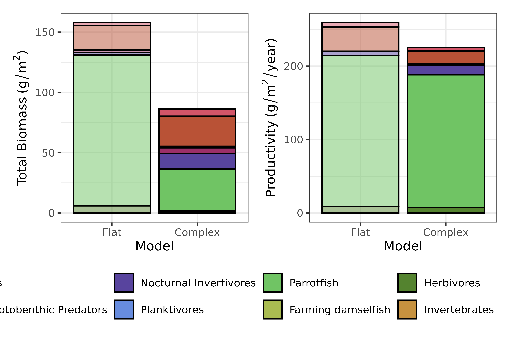
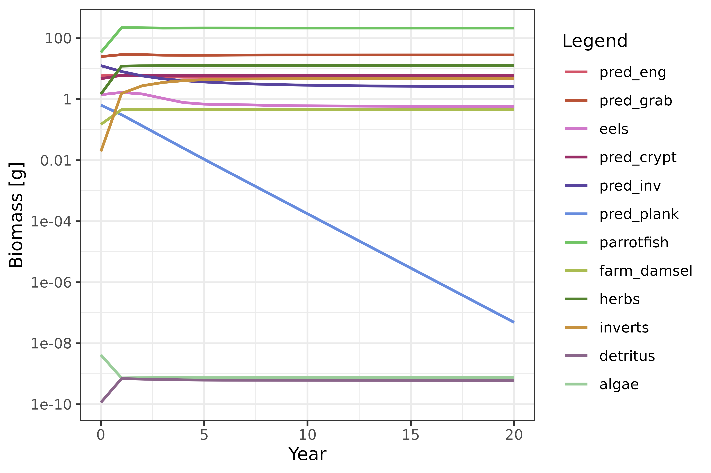
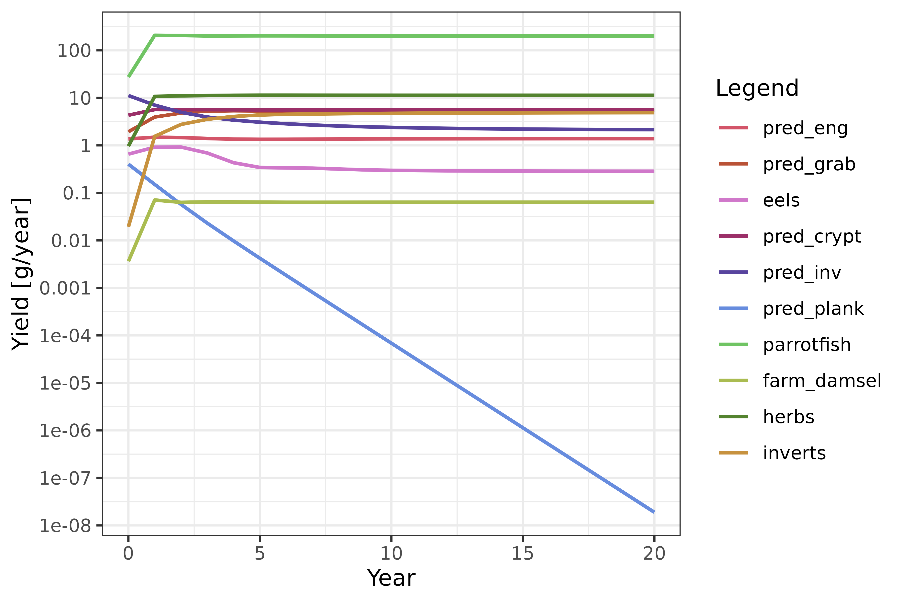
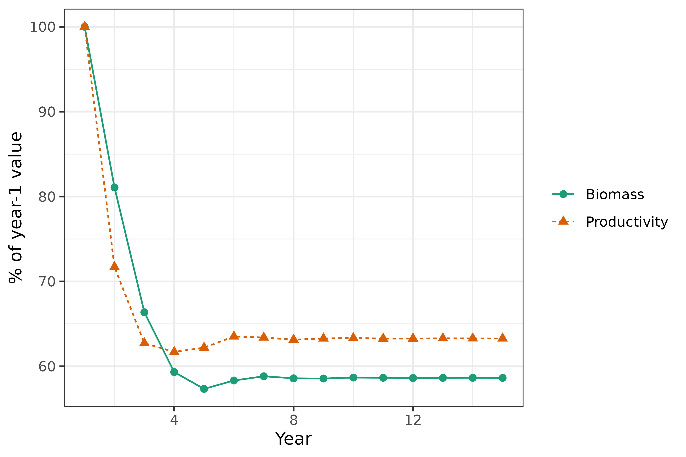
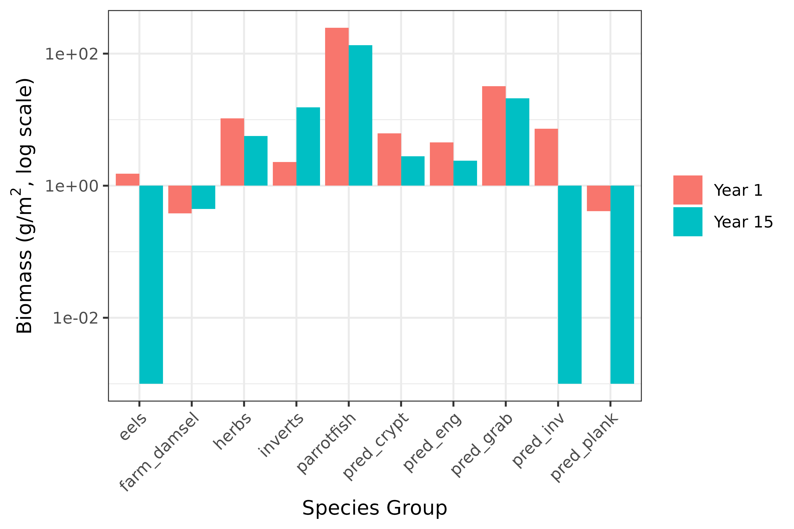
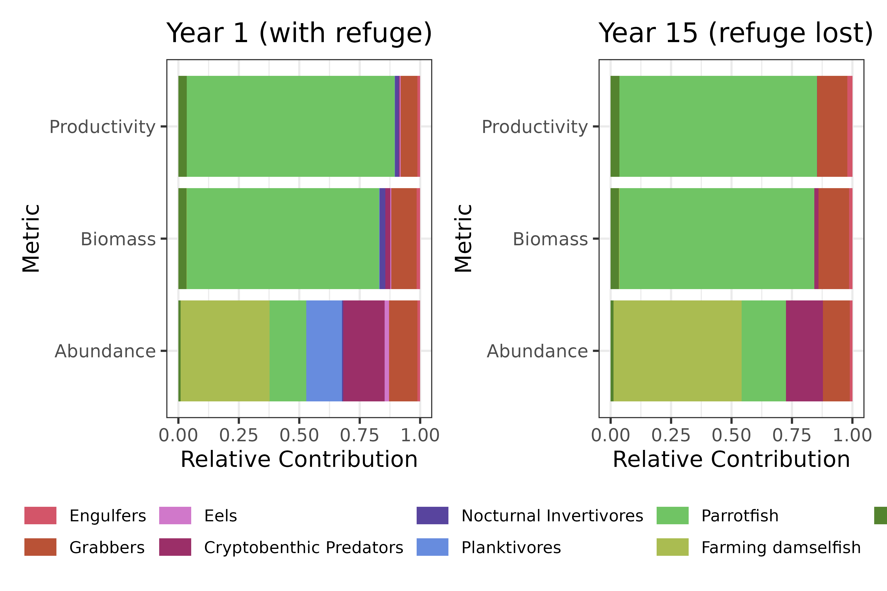

Overview
This vignette picks up once you have a tuned MizerReef
model at steady state – see vignette("mizerReef") for how
to build and tune one. It covers two things you typically want to do
with a tuned model: changing the refuge profile to explore how habitat
structure affects dynamics, and projecting a model forward in time with
fishing pressure or a changing habitat.
Changing the refuge profile
Changing the refuge profile allows you to explore how habitat structure affects model dynamics, such as biomass and productivity. This is useful for simulating habitat degradation or restoration scenarios.
Workflow:
- Use
newRefuge()to change the refuge profile in your model. - Run
reefSteady()several times to reach a new steady state. - Compare results (e.g., biomass and productivity) using built-in plotting functions.
# Change to a non-complex (no refuge) profile
non_complex <- newRefuge(caribbean_10_model, new_method = "noncomplex")
# Run to steady state
non_complex <- non_complex |> reefSteady() |> reefSteady() |> reefSteady()
# Compare biomass and productivity between models. Invertebrates aren't
# included in the productivity calculation, so only plot2TotalBiomass()'s
# legend has the complete set of species - keep that one and drop the
# other, rather than collecting both (which would duplicate the legend
# since the two plots' fill scales don't have identical levels).
all_biom11 <- plot2TotalBiomass(non_complex, caribbean_10_model,
name1 = "Flat",
name2 = "Complex",
stack = TRUE) +
ggplot2::theme_bw() +
ggplot2::guides(alpha = "none") +
ggplot2::theme(legend.position = "bottom")
all_prod11 <- plot2Productivity(non_complex, caribbean_10_model,
name1 = "Flat",
name2 = "Complex",
stack = TRUE) +
ggplot2::theme_bw() +
ggplot2::guides(alpha = "none") +
ggplot2::theme(legend.position = "none")
patchwork::wrap_plots(all_biom11, all_prod11)
Figure 3. The biomass (left) and productivity (right) for a model with no predation refuge (non-complex) and a model with predation refuge based on data from Karpata Reef in Bonaire (complex). Colours represent species groups.
As we can see in Figure 3, removing refuge availability reduces total biomass substantially. Total productivity, by contrast, is only modestly affected here – refuge changes which species contribute most to production more than it changes the total. Biomass and productivity can decouple like this because refuge protects juveniles from predation, letting populations skew toward larger, slower-growing individuals: standing biomass goes up, but production per unit biomass goes down.
💡 Tip: If your results look odd after changing the refuge profile, run
It needs to run enough times to reach a new steady state. To learn more about modifying refuge profiles and their parameters, see [setRefuge()].reefSteady().
For more information on the example data used in this vignette, see the mizerReef model description vignette.
Running a simulation
Once you have a tuned model at steady state, you can project it
forward in time with mizer’s project() function, exactly as
you would for a standard mizer model. This section shows two common
scenarios: adding fishing pressure, and letting a parameter (here, the
refuge profile) change part-way through a simulation.
Simulating fishing pressure
caribbean_10_model already has gear parameters set up,
so you can project it forward at a chosen fishing effort. Comparing an
unfished run (effort = 0) against a fished run shows the
effect of fishing on total biomass:
sim_unfished <- project(caribbean_10_model, effort = 0, t_max = 20,
progress_bar = FALSE)
sim_fished <- project(caribbean_10_model, effort = 1, t_max = 20,
progress_bar = FALSE)
# Total biomass after 20 years, unfished vs. fished
c(unfished = sum(mizer::getBiomass(sim_unfished)[21, ]),
fished = sum(mizer::getBiomass(sim_fished)[21, ]))## unfished fished
## 453.4778 276.6875
plotBiomass(sim_fished) +
ggplot2::theme_bw()
Figure 4. Total biomass over time for the fished simulation.
Yield (the catch taken by the fishery) can be plotted the same way:

Yield over time for the fished simulation.
See mizer’s own effort and fishing mortality articles for more on setting up gears, selectivity, and effort schedules.
Simulating habitat decline
Refuge parameters can also be changed between projection steps, so a
simulation can represent a habitat that is gradually declining (or
recovering) rather than staying fixed. The example below uses the
sigmoidal method (the simplest of the three refuge methods) purely to
illustrate the mechanism: shrink the refuge threshold length
and the maximum protected proportion a little each year for five years,
projecting one year at a time and carrying the model’s state forward
with mizer::finalParams(). The refuge is then left at its
final, most-degraded setting for ten more years so the community has
time to settle into a new steady state.
params <- newRefuge(caribbean_10_model, new_method = "sigmoidal",
new_method_params = list(L_refuge = 10, prop_protect = 0.8))
sim <- project(params, t_max = 1, progress_bar = FALSE)
params <- mizer::finalParams(sim)
params_yr1 <- params
# Refuge threshold length and maximum protection shrinking over 5 years,
# then held fixed for 10 more years to let the community re-equilibrate
L_seq <- c(10, 8, 6, 4, 2)
prop_seq <- c(0.8, 0.6, 0.4, 0.2, 0.05)
n_years <- length(L_seq) + 10
biomass_trend <- numeric(n_years)
productivity_trend <- numeric(n_years)
biomass_trend[1] <- sum(mizer::getBiomass(params_yr1))
productivity_trend[1] <- sum(getProductivity(params_yr1))
for (i in 2:n_years) {
if (i <= length(L_seq)) {
params <- newRefuge(params, new_method = "sigmoidal",
new_L_refuge = L_seq[i], new_prop_protect = prop_seq[i])
}
sim <- project(params, t_max = 1, progress_bar = FALSE)
params <- mizer::finalParams(sim)
biomass_trend[i] <- sum(mizer::getBiomass(sim)[dim(sim@n)[1], ])
productivity_trend[i] <- sum(getProductivity(params))
}
params_yr15 <- params
# Normalise to year 1 so biomass and productivity (different units) can
# share one y-axis and be compared directly on the same plot.
trend_data <- data.frame(
year = rep(seq_len(n_years), 2),
pct = c(biomass_trend / biomass_trend[1] * 100,
productivity_trend / productivity_trend[1] * 100),
metric = rep(c("Biomass", "Productivity"), each = n_years)
)
ggplot2::ggplot(trend_data, ggplot2::aes(x = year, y = pct, color = metric,
shape = metric, linetype = metric)) +
ggplot2::geom_line() +
ggplot2::geom_point(size = 2) +
ggplot2::scale_color_manual(values = c(Biomass = "#1B9E77", Productivity = "#D95F02")) +
ggplot2::labs(x = "Year", y = "% of year-1 value", color = NULL, shape = NULL, linetype = NULL) +
ggplot2::theme_bw()
Total biomass and productivity over fifteen years as refuge shrinks then holds at its final degraded state, each shown as a percentage of its year-1 value so the two can share one axis.
Biomass ends up lower than where it started (about 90% of its year-1 value), but productivity actually settles at a higher new steady state (about 125%). Aggregate totals like these can hide a lot of detail, though - looking at individual species groups tells a very different story:
species_names <- species_params(caribbean_10_model)$species
species_comparison <- data.frame(
species = rep(species_names, 2),
year = rep(c("Year 1", "Year 15"), each = length(species_names)),
biomass = c(as.numeric(mizer::getBiomass(params_yr1)),
as.numeric(mizer::getBiomass(params_yr15)))
)
ggplot2::ggplot(species_comparison, ggplot2::aes(x = species, y = biomass, fill = year)) +
ggplot2::geom_col(position = "dodge") +
ggplot2::scale_y_log10(limits = c(1e-3, NA), oob = scales::squish) +
ggplot2::labs(x = "Species Group", y = expression("Biomass (g/m"^2*", log scale)"), fill = NULL) +
ggplot2::theme_bw() +
ggplot2::theme(axis.text.x = ggplot2::element_text(angle = 45, hjust = 1))
Species-level biomass before (year 1) and after (year 15) refuge loss, log scale. Several groups collapse to near zero.
Four of the ten species groups - Engulfers, Eels, Nocturnal
Invertivores and Planktivores, all species that rely on refuge for
protection - collapse to functionally zero biomass. Parrotfish (the
dominant group by biomass) barely changes, and Invertebrates increase
substantially, which is why the aggregate biomass and
productivity trends above look like a moderate decline rather than a
multi-species collapse. plotRelativeContribution() makes
the same point from a different angle, comparing how much each species
group contributes to abundance, biomass, and productivity before and
after:
patchwork::wrap_plots(
plotRelativeContribution(params_yr1) + ggplot2::ggtitle("Year 1 (with refuge)") + ggplot2::theme_bw(),
plotRelativeContribution(params_yr15) + ggplot2::ggtitle("Year 15 (refuge lost)") + ggplot2::theme_bw()
) +
patchwork::plot_layout(guides = "collect") &
ggplot2::theme(
legend.position = "bottom",
legend.title = ggplot2::element_blank(),
legend.text = ggplot2::element_text(size = 8),
legend.key.height = grid::unit(0.35, "cm"),
legend.key.width = grid::unit(0.6, "cm"),
legend.spacing.x = grid::unit(0.1, "cm")
)
Relative contribution of each species group to abundance, biomass, and productivity, comparing year 1 (with refuge) and year 15 (refuge lost).
The Planktivores’ share of total abundance in year 1 (the blue band) is entirely gone by year 15 - direct visual confirmation of the collapse shown in the previous figure, this time in terms of each group’s relative share rather than its absolute biomass.
💡 Tip: This is a mechanism demo, not a calibrated analysis.
Switching refuge methods abruptly (as done here) skips the tuning workflow described in Tuning the steady state; for a real analysis, follow that recipe after switching methods, not just after creating the model.MizerReefalso supports fully specified, data-driven habitat-degradation trajectories via [setDegradation()] and [reefDegrade()] for the"competitive"refuge method — see their reference pages for details.
Links and further reading
MizerReef documentation and tutorials:
- Getting started with MizerReef: Building, tuning and exploring your first model – start here if you haven’t already
- MizerReef documentation: Main package documentation and reference manual
- MizerReef model description vignette: Detailed explanation of model structure and example workflows
-
MizerReef Steady State
recipe: Step-by-step guide for tuning models to steady state,
including the diet and resource-scale tuning covered in
vignette("tuning-diet-composition") - Example models and built-in data: Reference for example species, interaction matrices, and refuge profiles
Plotting and function references:
- MizerReef summary plots: List of available summary and diagnostic plots
- setRefuge() function documentation: Details on modifying refuge profiles and parameters
- Mizer plotting results reference: Reference for plotting functions in mizer
General mizer resources:
- Official mizer getting started guide: General introduction to mizer
Further research:
- Modelling Coral Reef Futures: Exploring the role of structural complexity in sustaining ecosystem services (PhD Thesis, VUW): In-depth research and context for MizerReef
Session info
## R version 4.6.1 (2026-06-24)
## Platform: x86_64-pc-linux-gnu
## Running under: Ubuntu 24.04.5 LTS
##
## Matrix products: default
## BLAS: /usr/lib/x86_64-linux-gnu/openblas-pthread/libblas.so.3
## LAPACK: /usr/lib/x86_64-linux-gnu/openblas-pthread/libopenblasp-r0.3.26.so; LAPACK version 3.12.0
##
## locale:
## [1] LC_CTYPE=C.UTF-8 LC_NUMERIC=C LC_TIME=C.UTF-8
## [4] LC_COLLATE=C.UTF-8 LC_MONETARY=C.UTF-8 LC_MESSAGES=C.UTF-8
## [7] LC_PAPER=C.UTF-8 LC_NAME=C LC_ADDRESS=C
## [10] LC_TELEPHONE=C LC_MEASUREMENT=C.UTF-8 LC_IDENTIFICATION=C
##
## time zone: UTC
## tzcode source: system (glibc)
##
## attached base packages:
## [1] stats graphics grDevices utils datasets methods base
##
## other attached packages:
## [1] mizerReef_2.1.0 mizerExperimental_3.3.1 mizer_3.4.0.9000
##
## loaded via a namespace (and not attached):
## [1] plotly_4.12.1 sass_0.4.10 generics_0.1.4
## [4] tidyr_1.3.2 stringi_1.8.9 digest_0.6.39
## [7] magrittr_2.0.5 timechange_0.4.0 evaluate_1.0.5
## [10] grid_4.6.1 RColorBrewer_1.1-3 fastmap_1.2.0
## [13] plyr_1.8.9 jsonlite_2.0.0 httr_1.4.9
## [16] purrr_1.2.2 viridisLite_0.4.3 scales_1.4.0
## [19] textshaping_1.0.5 jquerylib_0.1.4 cli_3.6.6
## [22] rlang_1.3.0 withr_3.0.3 cachem_1.1.0
## [25] yaml_2.3.12 otel_0.2.0 tools_4.6.1
## [28] reshape2_1.4.5 dplyr_1.2.1 ggplot2_4.0.3
## [31] assertthat_0.2.1 vctrs_0.7.3 R6_2.6.1
## [34] lubridate_1.9.5 lifecycle_1.0.5 stringr_1.6.0
## [37] fs_2.1.0 htmlwidgets_1.6.4 ragg_1.5.2
## [40] pkgconfig_2.0.3 desc_1.4.3 pkgdown_2.2.1
## [43] pillar_1.11.1 bslib_0.12.0 gtable_0.3.6
## [46] glue_1.8.1 data.table_1.18.6.1 Rcpp_1.1.2
## [49] systemfonts_1.3.2 xfun_0.61 tibble_3.3.1
## [52] tidyselect_1.2.1 knitr_1.52 farver_2.1.2
## [55] patchwork_1.3.2 htmltools_0.5.9 labeling_0.4.3
## [58] rmarkdown_2.32 compiler_4.6.1 S7_0.2.2